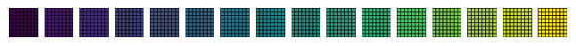
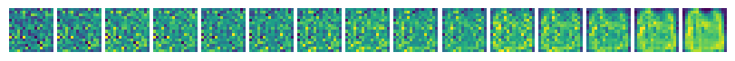
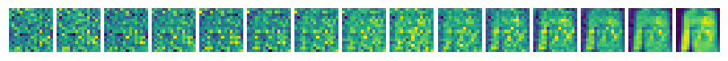
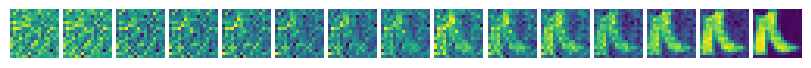
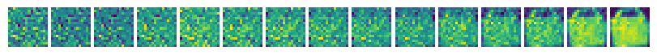
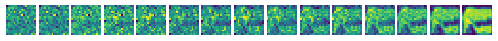

from pathlib import Path
# %config InlineBackend.figure_formats = {'retina', 'png'}
import numpy as np
import torch
from matplotlib import pyplot as plt
# import torch.nn as nn
# import torch.optim as optim
from torch import Tensor, nn, optim
from torch.nn import functional as F
from torch.utils.data import ConcatDataset, DataLoader
from torchvision import transforms as VT
PROJECT_PATH = Path(".").resolve()
FIGURE_PATH = PROJECT_PATH / "figures"
DATASET_PATH = Path.home() / "datasets"
assert FIGURE_PATH.exists()
assert DATASET_PATH.exists()
N_WORKERS = 8
SEED = 42
BATCH_SIZE = 128
IMG_SIZE = 16
IMG_CH = 1Diffusion Models
Gregor Cerar
2024-08-20
Abstract TODO
Introduction
TODO
AMP_ENABLED = False
device = torch.device("cpu")
if torch.cuda.is_available():
device = torch.device("cuda")
if torch.cuda.is_bf16_supported():
AMP_ENABLED = Truenrows = 10
ncols = 15
T = nrows * ncols
B_start = 0.0001
B_end = 0.02
B = torch.linspace(B_start, B_end, T).to(device)
# ddpm = ddpm_utils.DDPM(B, device)g = torch.Generator()
g.manual_seed(SEED)
loader_kwargs = {
"num_workers": 8,
"pin_memory": True,
"shuffle": True,
"drop_last": True,
"batch_size": BATCH_SIZE,
"prefetch_factor": 16,
"persistent_workers": False,
"worker_init_fn": seed_worker,
"generator": g,
}def load_dataset(img_size: int) -> ConcatDataset:
from torchvision.datasets import FashionMNIST
transform = VT.Compose(
[
VT.Resize((img_size, img_size)),
VT.ToTensor(), # Scales data into [0,1]
VT.RandomHorizontalFlip(),
VT.Lambda(lambda t: (t * 2) - 1), # Scale between [-1, 1]
]
)
train_set = FashionMNIST(DATASET_PATH, train=True, download=True, transform=transform)
test_set = FashionMNIST(DATASET_PATH, train=False, download=True, transform=transform)
dataset = ConcatDataset([train_set, test_set])
return dataset
dataset = load_dataset(IMG_SIZE)class GELUConvBlock(nn.Module):
def __init__(self, in_chs: int, out_chs: int, group_size: int):
super().__init__()
self.layers = nn.Sequential(
nn.Conv2d(in_chs, out_chs, kernel_size=3, stride=1, padding=1),
nn.GroupNorm(group_size, out_chs),
nn.GELU(),
)
def forward(self, x: Tensor) -> Tensor:
return self.layers(x)import einops
x = torch.rand(128, 3, 128, 128)
y = einops.rearrange(x, "b c (h p1) (w p2) -> b (c p1 p2) h w", p1=2, p2=2)
assert np.prod(x.shape) == np.prod(y.shape)def show_image(x: np.ndarray) -> None:
if x.ndim == 4:
x = x[0, ...]
vmin, vmax = np.min(x), np.max(x)
n_channels = x.shape[0] if len(x.shape) == 3 else 1
fig, axes = plt.subplots(nrows=1, ncols=n_channels, squeeze=False, frameon=False)
for i, ax in zip(range(n_channels), axes.flat, strict=True):
ax.pcolor(x[i], edgecolors="k", cmap="viridis", linewidth=0.5, vmin=vmin, vmax=vmax)
ax.set_aspect("equal")
ax.axis("off")
fig.tight_layout(pad=0.5)
plt.show()# Let's demonstrate what it does
size = (4, 4)
repeat = (8, 8)
# Define a base 2x2 pattern
# base_pattern = torch.tensor([[0, 4, 8, 16], [1, 5, 9,] , [2], [3]], dtype=torch.float32)
base_pattern = np.arange(np.prod(size)).reshape(size)
base_pattern = torch.asarray(base_pattern)
base_pattern = base_pattern / base_pattern.numel()
# Repeat the pattern to get a checkerboard
checkerboard = base_pattern.repeat(*repeat)
x = checkerboard.reshape(1, 1, *checkerboard.shape)
show_image(x.numpy())
p1, p2 = size
y = einops.rearrange(x, "b c (h p1) (w p2) -> b (c p1 p2) h w", p1=p1, p2=p2)
show_image(y.numpy())

from einops.layers.torch import Rearrange
class RearrangePoolBlock(nn.Module):
def __init__(self, in_chs: int, group_size: int):
super().__init__()
self.rearrange = Rearrange("b c (h p1) (w p2) -> b (c p1 p2) h w", p1=2, p2=2)
self.conv = GELUConvBlock(4 * in_chs, in_chs, group_size)
def forward(self, x: Tensor) -> Tensor:
x = self.rearrange(x)
return self.conv(x)class DownBlock(nn.Module):
def __init__(self, in_chs: int, out_chs: int, group_size: int):
super().__init__()
self.layers = nn.Sequential(
GELUConvBlock(in_chs, out_chs, group_size),
GELUConvBlock(out_chs, out_chs, group_size),
RearrangePoolBlock(out_chs, group_size),
)
def forward(self, x):
return self.layers(x)class UpBlock(nn.Module):
def __init__(self, in_chs: int, out_chs: int, group_size: int):
super().__init__()
self.layers = nn.Sequential(
nn.ConvTranspose2d(2 * in_chs, out_chs, kernel_size=2, stride=2),
GELUConvBlock(out_chs, out_chs, group_size),
GELUConvBlock(out_chs, out_chs, group_size),
GELUConvBlock(out_chs, out_chs, group_size),
GELUConvBlock(out_chs, out_chs, group_size),
)
def forward(self, x: Tensor, skip: Tensor) -> Tensor:
x = torch.cat((x, skip), 1)
x = self.layers(x)
return xclass ResidualConvBlock(nn.Module):
def __init__(self, in_chs: int, out_chs: int, group_size: int):
super().__init__()
self.conv1 = GELUConvBlock(in_chs, out_chs, group_size)
self.conv2 = GELUConvBlock(out_chs, out_chs, group_size)
def forward(self, x):
x1 = self.conv1(x)
x2 = self.conv2(x1)
out = x1 + x2
return outimport math
class SinusoidalPositionEmbedBlock(nn.Module):
def __init__(self, dim: int):
super().__init__()
self.dim = dim
def forward(self, time: Tensor) -> Tensor:
device = time.device
half_dim = self.dim // 2
embeddings = math.log(10_000) / (half_dim - 1)
embeddings = torch.exp(torch.arange(half_dim, device=device) * -embeddings)
embeddings = time[:, None] * embeddings[None, :]
embeddings = torch.cat((embeddings.sin(), embeddings.cos()), dim=-1)
return embeddingsclass EmbedBlock(nn.Module):
def __init__(self, input_dim: int, emb_dim: int):
super().__init__()
self.input_dim = input_dim
self.model = nn.Sequential(
nn.Linear(input_dim, emb_dim),
nn.GELU(),
nn.Linear(emb_dim, emb_dim),
nn.Unflatten(1, (emb_dim, 1, 1)),
)
def forward(self, x: Tensor) -> Tensor:
x = x.view(-1, self.input_dim)
return self.model(x)class UNet(nn.Module):
def __init__(self):
super().__init__()
img_chs = IMG_CH
down_chs = (64, 64, 128)
up_chs = down_chs[::-1] # Reverse of the down channels
latent_image_size = IMG_SIZE // 4 # 2 ** (len(down_chs) - 1)
t_dim = 8
group_size_base = 4
small_group_size = 2 * group_size_base
big_group_size = 8 * group_size_base
# Inital convolution
self.down0 = ResidualConvBlock(img_chs, down_chs[0], small_group_size)
# Downsample
self.down1 = DownBlock(down_chs[0], down_chs[1], big_group_size)
self.down2 = DownBlock(down_chs[1], down_chs[2], big_group_size)
self.to_vec = nn.Sequential(nn.Flatten(), nn.GELU())
# Embeddings
self.dense_emb = nn.Sequential(
nn.Linear(down_chs[2] * latent_image_size**2, down_chs[1]),
nn.ReLU(),
nn.Linear(down_chs[1], down_chs[1]),
nn.ReLU(),
nn.Linear(down_chs[1], down_chs[2] * latent_image_size**2),
nn.ReLU(),
)
# Time embeddings (temb)
self.sinusoidaltime = SinusoidalPositionEmbedBlock(t_dim)
self.temb_1 = EmbedBlock(t_dim, up_chs[0])
self.temb_2 = EmbedBlock(t_dim, up_chs[1])
# Upsample
self.up0 = nn.Sequential(
nn.Unflatten(1, (up_chs[0], latent_image_size, latent_image_size)),
GELUConvBlock(up_chs[0], up_chs[0], big_group_size),
)
self.up1 = UpBlock(up_chs[0], up_chs[1], big_group_size)
self.up2 = UpBlock(up_chs[1], up_chs[2], big_group_size)
# Match output channels and one last concatenation
self.out = nn.Sequential(
nn.Conv2d(2 * up_chs[-1], up_chs[-1], 3, 1, 1),
nn.GroupNorm(small_group_size, up_chs[-1]),
nn.ReLU(),
nn.Conv2d(up_chs[-1], img_chs, 3, 1, 1),
)
def forward(self, x: Tensor, t: Tensor):
down0 = self.down0(x)
down1 = self.down1(down0)
down2 = self.down2(down1)
latent_vec = self.to_vec(down2)
latent_vec = self.dense_emb(latent_vec)
t = t.float() / T # Convert from [0, T] to [0, 1]
t = self.sinusoidaltime(t)
up0 = self.up0(latent_vec)
temb_1 = self.temb_1(t)
up1 = self.up1(up0 + temb_1, down2)
temb_2 = self.temb_2(t)
up2 = self.up2(up1 + temb_2, down1)
return self.out(torch.cat((up2, down0), 1))seed_everything()
model = UNet()
print("Num params: ", sum(p.numel() for p in model.parameters()))
model = torch.compile(model.to(device))Num params: 1979777#!pip install graphviz torchview
import graphviz
from torchview import draw_graph
graphviz.set_jupyter_format("png")
model_graph = draw_graph(
UNet(),
input_size=((BATCH_SIZE, IMG_CH, IMG_SIZE, IMG_SIZE), (BATCH_SIZE,)),
device="meta",
depth=1,
expand_nested=False,
graph_dir="TD",
graph_name="U-Net with Positional Embeddings",
)
model_graph.resize_graph(scale=0.75)
model_graph.visual_graph
def show_tensor_image(image):
reverse_transforms = VT.Compose(
[
VT.Lambda(lambda t: (t + 1) / 2),
VT.Lambda(lambda t: torch.minimum(torch.tensor([1]), t)),
VT.Lambda(lambda t: torch.maximum(torch.tensor([0]), t)),
VT.ToPILImage(),
]
)
plt.imshow(reverse_transforms(image[0].detach().cpu()))
class DDPM:
def __init__(self, B: Tensor, device: torch.device):
self.B = B
self.T = len(B)
self.device = device
# Forward diffusion variables
self.a = 1.0 - self.B
self.a_bar = torch.cumprod(self.a, dim=0)
self.sqrt_a_bar = torch.sqrt(self.a_bar) # Mean Coefficient
self.sqrt_one_minus_a_bar = torch.sqrt(1 - self.a_bar) # St. Dev. Coefficient
# Reverse diffusion variables
self.sqrt_a_inv = torch.sqrt(1 / self.a)
self.pred_noise_coeff = (1 - self.a) / torch.sqrt(1 - self.a_bar)
def q(self, x_0: Tensor, t: Tensor) -> tuple[Tensor, Tensor]:
"""
The forward diffusion process
Returns the noise applied to an image at timestep t
x_0: the original image
t: timestep
"""
t = t.int()
noise = torch.randn_like(x_0)
sqrt_a_bar_t = self.sqrt_a_bar[t, None, None, None]
sqrt_one_minus_a_bar_t = self.sqrt_one_minus_a_bar[t, None, None, None]
x_t = sqrt_a_bar_t * x_0 + sqrt_one_minus_a_bar_t * noise
return x_t, noise
def get_loss(self, model: nn.Module, x_0: Tensor, t: Tensor, *model_args):
x_noisy, noise = self.q(x_0, t)
noise_pred = model(x_noisy, t, *model_args)
return F.mse_loss(noise, noise_pred)
@torch.no_grad()
def reverse_q(self, x_t: Tensor, t: Tensor, e_t: Tensor):
"""
The reverse diffusion process
Returns the an image with the noise from time t removed and time t-1 added.
model: the model used to remove the noise
x_t: the noisy image at time t
t: timestep
model_args: additional arguments to pass to the model
"""
t = t.int()
pred_noise_coeff_t = self.pred_noise_coeff[t]
sqrt_a_inv_t = self.sqrt_a_inv[t]
u_t = sqrt_a_inv_t * (x_t - pred_noise_coeff_t * e_t)
if t[0] == 0: # All t values should be the same
return u_t # Reverse diffusion complete!
else:
B_t = self.B[t - 1] # Apply noise from the previos timestep
new_noise = torch.randn_like(x_t)
return u_t + torch.sqrt(B_t) * new_noise
@torch.no_grad()
def sample_images(self, model: UNet, img_ch: int, img_size: int, ncols: int, *model_args, axis_on=False):
# Noise to generate images from
x_t = torch.randn((1, img_ch, img_size, img_size), device=self.device)
hidden_rows = self.T / ncols
# Go from T to 0 removing and adding noise until t = 0
imgs: list[np.ndarray] = []
for i in range(0, self.T)[::-1]:
t = torch.full((1,), i, device=self.device).float()
e_t = model(x_t, t, *model_args) # Predicted noise
x_t = self.reverse_q(x_t, t, e_t)
if i % hidden_rows == 0:
imgs.append(x_t.detach().squeeze().cpu().numpy())
fig, axes = plt.subplots(ncols=len(imgs), figsize=(8, 8 * len(imgs)), frameon=False)
for img, ax in zip(imgs, axes.flatten(), strict=True):
ax.imshow(img, cmap="viridis", interpolation="none")
ax.axis("off")
fig.tight_layout(pad=0.3)
plt.show()ddpm = DDPM(B, device)seed_everything()
dataloader = DataLoader(dataset, **loader_kwargs)
model = UNet().to(device)
model.compile()
optimizer = optim.Adam(model.parameters(), lr=0.001)
epochs = 5
model.train()
for epoch in range(epochs):
for step, batch in enumerate(dataloader):
optimizer.zero_grad()
t = torch.randint(0, T, (BATCH_SIZE,), device=device).float()
x = batch[0].to(device)
loss = ddpm.get_loss(model, x, t)
loss.backward()
optimizer.step()
if epoch % 2 == 0 and step % 100 == 0:
print(f"Epoch {epoch} | step {step:03d} Loss: {loss.item()} ")
ddpm.sample_images(model, IMG_CH, IMG_SIZE, ncols)Epoch 0 | step 000 Loss: 1.2207108736038208 
Epoch 0 | step 100 Loss: 0.19032590091228485 
Epoch 0 | step 200 Loss: 0.1533614844083786 
Epoch 0 | step 300 Loss: 0.13479699194431305 
Epoch 0 | step 400 Loss: 0.11241045594215393 
Epoch 0 | step 500 Loss: 0.10671889781951904 
Epoch 2 | step 000 Loss: 0.09664588421583176 
Epoch 2 | step 100 Loss: 0.11281585693359375 
Epoch 2 | step 200 Loss: 0.10750314593315125 
Epoch 2 | step 300 Loss: 0.11491468548774719 
Epoch 2 | step 400 Loss: 0.08221639692783356 
Epoch 2 | step 500 Loss: 0.09608876705169678 
Epoch 4 | step 000 Loss: 0.09008808434009552 
Epoch 4 | step 100 Loss: 0.10687225311994553 
Epoch 4 | step 200 Loss: 0.08631161600351334 
Epoch 4 | step 300 Loss: 0.1040995866060257 
Epoch 4 | step 400 Loss: 0.08699659258127213 
Epoch 4 | step 500 Loss: 0.08632637560367584 
### Classifier Free version